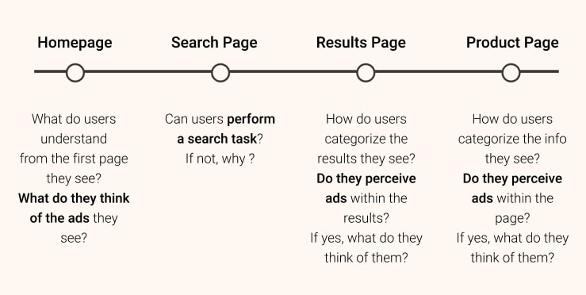
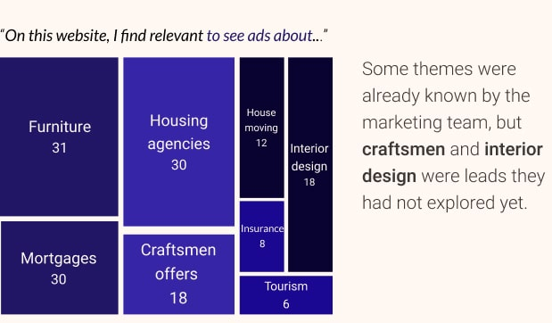

Context
During my time as a UX Remote Researcher at Testapic ("the french UserTesting"), I carried out 50+ different quantitative and qualitative studies. In total, I analyzed during that year more than 1,500 user feedbacks from recordings of remote unmoderated user tests and questionnaires answers. I was able to tackle a lot of various UX issues, like helping to redesign the information architecture of institutional sites, exploring pain points in several e-commerce funnels, or understanding main motivations and differentiators in topics such as banking and insurance.
One of the most interesting projects I worked on was to help redefine the advertising experience on one of the biggest real estate and rental property website in France. I enjoyed it specifically because it addressed advertising, which has not enough visibility in the UX scope in my opinion. It almost seems paradoxical when you know the impact ads can have on user experience!
Role : One-man UX Remote Research team. Supervised by Nicolas Guirao
(CEO)
Methodology : Survey, Remote User Testing, Statistical
Analysis
Tools : Google Forms, Testapic Internal Tool (Leo), Figma, Marvel,
Google Sheets
Time : Approx. 1 month
Understanding the topic
Considered by many as a nuisance and by others as a "necessary evil", it is an accepted fact that advertising has a non-negligible influence on our digital life. For the most part, the study of advertising according to UX is simple: it is something which is not asked nor desired by the user, it must then be at worst minimized and at best non-existent.
Simple, right?
But what if, we also consider the stakeholder's needs related to business and revenue generation? It becomes obvious that advertising needs to be taken into account into the long-term strategy, and that it is in the best interest of users AND business to have the best implementation possible.
Two objectives were set for this study:
To assess the digital advertising perception in general
and
to evaluate the proposed interface of the website and
application, in order to gather users feedback and to assist teams in serving
better ads
Surveying the panel
To complete the first objective, I sent a questionnaire to 2888 testers out of Testapic panel. The results were an excellent basis to start this study:


All these insights helped me paint a better picture of the advertising landscape, and understand that a better effort needed to be put into presenting pertinent ads.
User testing
After this general introduction, it was then time to get more specific
and evaluate the interface to:
• Evaluate the different types of advertising
formats and preferences.
• Identify the threshold of advertising pressure
users would tolerate.
• Identify user expectations in terms of content
within the ads.
The tests were carried out on Marvel prototypes on the client's website and application as well as on a competitor. I recruited 120+ participants for this part in user tests.
While testing only one site is interesting in itself, I always recommend introducing a competitor in the mix to gain some perspective and contrast. It is also good for helping testers pinpointing patterns they might not have noticed in only one product, and to make the best elements stand out more as well as the bad ones!
Assessing and presenting the results
The results mainly showed that
the most popular ads were either the most relevant to the navigation
context or the best-disguised ones . What was interesting was the fact that interactive and
contextual
advertisements were most of the time not identified as being ads,
because of their much better integration in the website. They seemed
like part of the content, and users liked that, simply because
they just don't like ads.
One of the most important recommendations was based on that fact, to aim
to show only the most relevant ads, seamlessly integrated to the product
page with well-thought and clear calls to action, and not just show
content.
This was also the occasion to ask users, with a sentence completion what type of content they were expecting to see advertised. Some of the results were surprising, even for the product team, which did not expect ads about certain topics such as "craftsmen" or "decoration" to be mentioned by testers.
Finding what users expected was a win-win for the company, as they could provide more relevant ads and expect more interaction in return (which means more revenue!).
Wrapping up
This study allowed me to venture into an unknown area of user experience, and to gather some observations that were useful for the product team. On top of the advertising-related insights, I delivered some guidelines from the website comparison to improve on usability.
What was the most interesting to me was that users had real and well-defined expectations about advertising, about wanting to be served better and more relevant ads, which seemed really counter-intuitive to me before that study!
Still here ? Read more about what I do now at Lyf Pay.